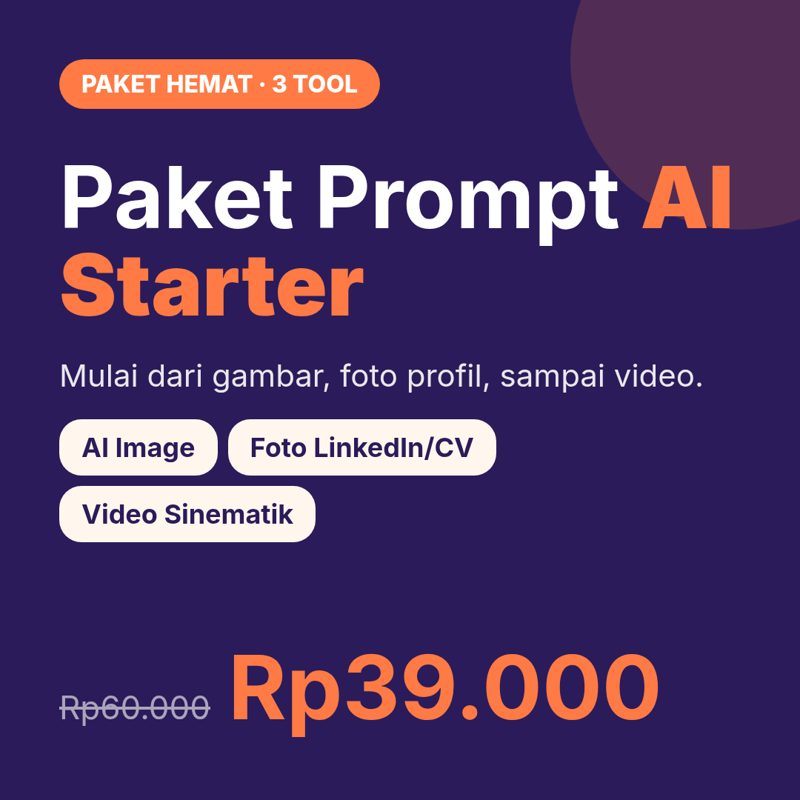

Cara Mulai Cuan dari AI untuk Pemula (Tanpa Hype)
Panduan realistis buat pemula: apa yang mungkin dan apa yang cuma hype, tool AI gratis yang perlu kamu kenal, 5 jalur cuan, dan rencana 30 hari pertama.
Kalau kamu sering lihat konten "jutaan per hari dari AI, cukup klik satu tombol", wajar kalau kamu penasaran sekaligus ragu. Artikel ini nggak akan menjanjikan hal yang sama. Kita bahas versi jujurnya: apa yang realistis, alat apa yang perlu kamu kenal, jalur mana yang masuk akal buat pemula, dan apa yang bisa kamu kerjakan dalam 30 hari pertama.
Realita dulu: apa yang mungkin, apa yang hype
Yang realistis buat pemula biasanya berupa jasa kecil (desain, konten, foto produk), produk digital di kisaran Rp10.000 sampai Rp100.000, dan penghasilan tambahan yang tumbuh pelan-pelan dalam hitungan bulan. Itu bukan angka yang bikin viral, tapi itu angka yang bisa kamu kejar dengan langkah jelas.
Yang hype? Janji "jutaan per hari tanpa kerja", "cukup klik satu tombol", atau "pasti laku". Kalau ada yang menjanjikan itu, hati-hati. Produk atau jasa laku karena masalah pembelinya selesai, bukan karena dibuat pakai AI.
Satu lagi soal waktu: wajar kalau 1 sampai 3 bulan pertama hasilnya masih kecil, bahkan nol. Itu fase belajar dan membangun kepercayaan. Banyak orang berhenti di fase ini justru karena ekspektasinya dibentuk oleh konten hype.
Tool AI yang perlu kamu kenal (gratis dulu)
Kamu nggak perlu langganan semuanya. Cukup kenal fungsinya:
- Teks & ide: ChatGPT, Gemini, Claude. Buat brainstorming, naskah, caption, riset, sampai menyusun struktur ebook.
- Gambar: ChatGPT, Gemini, Meta AI, Canva AI. Buat foto produk, ilustrasi, dan desain konten.
- Video: Kling, Hailuo, Veo (Gemini), Meta AI. Buat klip pendek sinematik, animasi, atau B-roll.
- Edit & desain: Canva dan CapCut. Buat merapikan hasil AI jadi konten atau produk yang siap jual.
Aturannya sederhana: mulai dari versi gratis, dan upgrade ke versi berbayar hanya kalau kamu sudah tahu persis butuhnya untuk apa.
5 jalur cuan dari AI untuk pemula
- Jasa konten AI. Bikin foto produk atau konten Instagram untuk UMKM di sekitarmu. Ini biasanya jalur paling cepat untuk dapat uang pertama.
- Produk digital lokal. Ebook, template, tool sederhana, dijual di platform seperti Lynk.
- Produk digital global lewat Etsy. Planner, printable, wall art. Dibayar dolar, tapi persaingannya lebih ketat dan persiapannya lebih banyak.
- Konten kreator AI. Bangun akun dengan konten AI (cerita, edukasi), lalu monetisasi lewat afiliasi atau produk sendiri.
- Video AI untuk orang lain. Storyboard iklan UGC, video edukasi, video kisah. Bisa dijual sebagai jasa atau paket.
Saran paling penting di artikel ini: pilih SATU jalur selama 30 hari. Gonta-ganti jalur adalah alasan paling umum pemula nggak dapat hasil. Setiap kali pindah, kamu mulai lagi dari nol.
Skill inti: cara berpikir prompt
Apa pun jalurnya, kamu akan sering "ngobrol" sama AI. Prompt yang bagus bukan soal kata ajaib, tapi soal kejelasan. Sebelum menulis, jawab lima pertanyaan: apa subjeknya, untuk apa hasilnya, gayanya seperti apa, suasana dan detailnya bagaimana, dan apa yang tidak boleh muncul. Kami bahas lebih detail di artikel Rumus Prompt Gambar AI yang Jelas.
Kalau hasil pertama belum pas, itu normal. Ubah satu unsur tiap kali (misalnya cahayanya saja), supaya kamu tahu apa yang berpengaruh. Simpan prompt yang berhasil di catatan pribadi. Lama-lama catatan itu jadi aset kamu.
Modal yang benar-benar dibutuhkan
- Alat: HP atau laptop plus internet. Itu cukup untuk mulai.
- Uang: bisa Rp0 dengan tool gratis. Siapkan budget kecil nanti, kalau sudah ada pemasukan.
- Waktu: realistisnya 1 sampai 2 jam per hari. Konsisten lebih penting daripada lama.
- Etalase: akun IG/FB yang rapi plus halaman Lynk untuk jualan dan terima pembayaran.
- Mental: siap diabaikan di awal, siap belajar dari data, dan nggak membandingkan diri dengan orang yang sudah bertahun-tahun.
Rencana 30 hari pertama
Minggu 1, pilih & pelajari. Pilih satu jalur. Coba tool-nya setiap hari. Kumpulkan 10 hasil terbaikmu.
Minggu 2, bangun etalase. Rapikan bio IG dan FB, buat halaman Lynk, dan posting 3 sampai 4 konten yang menunjukkan hasil kerjamu.
Minggu 3, buat penawaran pertama. Satu produk atau jasa sederhana dengan harga terjangkau, plus satu freebie untuk mengumpulkan peminat.
Minggu 4, promosi & evaluasi. Posting rutin, balas semua komentar dan DM, lalu catat konten mana yang paling direspons.
Kesalahan yang sering bikin pemula jalan di tempat
- Beli kursus mahal di awal, padahal belum tahu kebutuhannya.
- Pindah-pindah jalur sebelum 30 hari.
- Copy-paste mentah hasil AI tanpa cek fakta dan sentuhan pribadi.
- Melanggar hak cipta: memakai nama brand, karakter, atau wajah orang lain tanpa izin.
- Diam saja setelah produk jadi. Produk bagus nggak akan laku kalau nggak ada yang tahu.
Jadi, gimana sebenarnya cara dapat uang dari AI?
Pertanyaan "cara dapat uang dari AI" sering dijawab dengan daftar aplikasi. Padahal aplikasinya cuma alat. Uang datang dari pertukaran nilai: kamu menyelesaikan masalah seseorang, mereka membayar. AI membantu di bagian "mengerjakan", misalnya membuat draf lebih cepat, menghasilkan variasi visual, atau merapikan ide. Bagian "menemukan orang yang butuh" dan "meyakinkan mereka" tetap pekerjaan kamu.
Coba pikirkan dari sisi pembeli. Pemilik warung kopi nggak peduli fotonya dibuat pakai AI atau kamera mahal. Yang dia peduli: fotonya bikin menu kelihatan menarik, cepat jadi, dan harganya masuk akal. Kalau kamu bisa menjawab tiga hal itu, kamu punya penawaran.
Contoh hari pertama yang realistis
Biar lebih kebayang, ini contoh satu jam latihan di hari pertama untuk jalur jasa konten AI. Lima belas menit pertama: pilih satu jenis usaha di sekitarmu, misalnya kedai minuman. Lima belas menit berikutnya: coba bikin beberapa gambar produk dengan tool gratis, pakai lima pertanyaan prompt. Lima belas menit ketiga: rapikan hasil terbaik di Canva, tambahkan nama produk dan harga. Sisa waktu: simpan hasil ke folder portofolio dan catat prompt mana yang paling berhasil.
Satu jam itu nggak menghasilkan uang hari itu juga. Tapi setelah satu minggu, kamu punya contoh kerja yang bisa ditunjukkan. Itu jauh lebih meyakinkan daripada bilang "aku bisa pakai AI".
Cara tahu kamu sedang di jalur yang benar
Di awal, uang belum tentu jadi ukuran terbaik. Ukuran yang lebih berguna: apakah hasil kerjamu makin bagus dari minggu ke minggu, apakah ada orang yang mulai bertanya atau berkomentar, dan apakah kamu tetap konsisten posting. Kalau tiga hal ini bergerak, penjualan biasanya menyusul. Kalau setelah 30 hari belum ada respons sama sekali, evaluasi pesan dan target pembelinya dulu sebelum memutuskan ganti jalur.
Langkah kamu minggu ini
Pilih satu jalur, coba 2 sampai 3 tool AI gratis, latih lima pertanyaan prompt tiap hari, dan simpan hasil terbaikmu. Kalau mau versi lengkapnya dalam bentuk peta jalan dan checklist yang bisa kamu centang, ambil ebook gratisnya di bawah.
Mau lanjut?

Ebook Gratis: Cara Mulai Cuan dari AI untuk Pemula
Peta jalan 14 halaman: 5 jalur cuan, cara berpikir prompt, rencana 30 hari.

Paket Prompt AI Starter (3 Tool)
3 prompt generator buat mulai: AI Image, Foto Profil LinkedIn & CV, dan Video Sinematik.